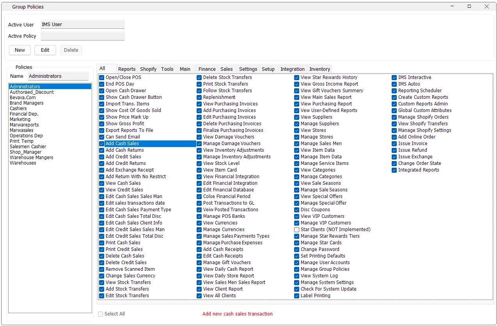

Group Policies defines reusable IMS permission profiles. Instead of granting every function directly to every user, administrators create named policies such as Cashiers, Shop Managers or Warehouse Managers, select the functions that policy allows, then assign users to those policies from Users Accounts.
Open the screenSystem → Group Policies.

Permissions can be reviewed in one All list or by functional category, with the selected permission's description shown at the bottom of the screen.
How Group Policies work
Each Group Policy contains a name and a set of allowed IMS functions. A user can belong to one or more policies through System → Users Accounts → Member Of. This makes policies the reusable permission layer, while Users Accounts also controls user-specific business scope such as Store and Supplier access.
Screen layout
Area
Purpose
Active User
Shows the IMS user currently operating the screen.
Policies
Lists the existing named Group Policies.
Name
Name of the selected or newly created policy.
All
Shows the complete permission list.
Category tabs
Shows the same permissions grouped into functional areas such as Sales, Inventory, Finance, Reports, Setup, Tools and Shopify.
Select All
Checks or clears every permission in the currently selected tab. On the All tab, it applies to the complete policy.
Description
Selecting a permission displays its business description at the bottom of the screen.
Permission categories
The screen loads permission names, descriptions and categories from the company’s permission catalog. The following functional areas help you find the relevant controls; the available list depends on that catalog:
Category
Catalog
Examples
Main
Company catalog
Open/Close POS, End POS Day, cash drawer, cost/markup/profit visibility, export and email.
Sales
Company catalog
Create/view/edit/print/delete sales and returns, exchanges, sales date, currency and scanned-item control.
Inventory
Company catalog
Stock Transfers, Transfer Following, Replenishment, Purchases, Stock Depreciation, Adjustments, Stock Level and Item Movement.
Finance
Company catalog
Financial integration, posting, posted transactions, banks, currencies, payment types, expenses, cash receipts and gift vouchers.
Reports
Company catalog
Daily Cash/Store reports, Sales Men/Ladies, client reports, Star Rewards, Gross Income, Main Sales, Purchasing and User-Defined Reports.
Setup
Company catalog
Suppliers, Stores, Sales Men/Ladies, Items, Categories, Sale Seasons, offers, VIP Customers, loyalty tiers and Star Cards.
Settings
Company catalog
Change Password, printing defaults, Users Accounts, Group Policies, System Log, System Settings and updates.
Tools
Company catalog
Label Printing, IMS Interactive, IMS Autos, Reporting Scheduler, Custom Reports and Global Custom Attributes.
Shopify
Company catalog
Shopify orders/transfers/settings and online-order invoice/refund/exchange/state operations.
Integration
Company catalog
Controls access to the Integration top-level menu, including Starco Stock Take, V-Count and Integration Center.
All tab and category tabs stay synchronized
The All tab and the category tabs are two views of the same policy. Checking or clearing a permission in All updates the same permission in its category tab, and changing it inside a category updates the corresponding permission in All.
This makes it practical to review a large policy globally, then switch to a specific business area for focused changes.
Permission descriptions
Click a permission to display its description at the bottom of the Group Policies window. The description explains what the permission controls, which is especially useful where two permissions have similar names such as viewing versus managing a module.
Create a Group Policy
Click New.
Enter a descriptive policy Name.
Open the relevant category tabs and check the functions the group should be allowed to use.
Use Select All within a category only when the role genuinely requires all functions in that area.
Review sensitive permissions such as deletion, financial posting, user administration and unrestricted sales functions carefully.
Click Save.
Assign users to the new policy from System → Users Accounts → Member Of.
Policy names must be unique. IMS saves the name together with the checked/unchecked state of the complete permission catalog.
Edit a policy
Select an existing policy and click Edit. Change the policy name or permission selections, then click Save. While the screen is in normal view mode, the permission checkboxes are read-only to prevent accidental changes.
Using Select All
Selected tab
Select All behavior
All
Checks or clears every IMS permission in the policy and mirrors the result to all category tabs.
A category tab
Checks or clears only the permissions in that category and mirrors those items back to All.
Administrative permissionsPermissions such as Manage User Accounts, Manage Group Policies, financial setup/posting, deletion rights and unrestricted transaction functions can materially change system data or security. Assign them only to roles that require them.
Permission reference
The following reference explains the operational permissions shown by IMS. Use the current company’s list in Group Policies to confirm availability. Expand a category when you need the meaning of a specific permission.
Main
Permission
Purpose
Open/Close POS
Open or close the POS shift.
End POS Day
End the POS business day permanently.
Open Cash Drawer
Allow the user to open the cash drawer.
Show Cash Drawer Button
Show the Cash Drawer button on the main form.
Import Trans. Items
Import items into sales or transfer transactions.
Show Cost Of Goods Sold
Show Cost of Goods Sold in reports and stock-transfer views.
Show Price Mark Up
Show Price Markup on sales reports.
Show Gross Profit
Show Gross Profit on sales reports
Export Reports To File
Allow user to export reports to text, csv or excel files.
Can Send Email
Allow user to send email from any report view and create his own contact list.
Sales
Permission
Purpose
Add Cash Sales
Add new cash sales transaction
Add Cash Returns
Add new cash returns transaction
Add Credit Sales
Add new credit sales transaction
Add Credit Returns
Add new credit returns transaction
Add Exchange Receipt
Add exchange receipt
Add Return With No Restrict
Allow returns without the original sales receipt or after the normal return period has passed.
View Cash Sales
Iterate through cash sales transactions
View Credit Sales
Iterate through credit sales transactions
Edit Cash Sales Sales Man
Edit the salesperson on existing cash sales or returns.
Edit sales transactions date
Edit sales transactions date
Edit Cash Sales Payment Type
Edit the payment type on existing, non-posted cash sales or returns.
Edit Cash Sales Total Disc
Edit the discount on existing, non-posted cash sales or returns.
Edit Cash Sales Client Info
Edit client information on existing cash sales or returns.
Edit Credit Sales Sales Man
Edit the salesperson on existing credit sales or returns.
Edit Credit Sales Total Disc
Edit the discount on existing, non-posted credit sales or returns.
Print Cash Sales
Print existing cash sales or Return transactions
Print Credit Sales
Print existing credit sales or Return transactions
Delete Cash Sales
Delete existing and NON POSTED cash sales transaction
Delete Credit Sales
Delete existing and NON POSTED credit sales transaction
Remove Scanned Item
Remove item from sales transactions after scanning.
Change Sales Currency
Change currency on sales transactions
Inventory
Permission
Purpose
View Stock Transfers
Review stock transfer vouchers in Transactions Expert.
Add Stock Transfers
Add new stock transfer vouchers
Edit Stock Transfers
Edit existing non-posted stock transfer vouchers from Transactions Expert.
Delete Stock Transfers
Delete existing non-posted stock transfer vouchers from Transactions Expert.
Print Stock Transfers
Print existing stock transfer vouchers from Transactions Expert.
Follow Stock Transfers
Follow up stock transfers
Replenishment
Replenish Store stock.
View Purchasing Invoices
View Purchasing Invoices
Add Purchasing Invoices
Add Purchasing Invoices
Edit Purchasing Invoices
Edit Purchasing Invoices
Delete Purchasing Invoices
Delete Purchasing Invoices
Finalize Purchasing Invoices
Finalize purchasing invoices.
View Damage Vouchers
View Damage Vouchers
Manage Damage Vouchers
Manage Damage Vouchers
View Inventory Adjustments
View Inventory Adjustments
Manage Inventory Adjustments
Manage Inventory Adjustments
View Stock Level
View Stock Level
View Item Card
View Item Card
Finance
Permission
Purpose
View Financial Integration
View Financial Integration
Edit Financial Integration
Edit Financial Integration
Edit Financial Database
Edit Financial Database
Colse Financial Period
Close the financial period.
Post Transactions to GL
Post Transactions to GL
Veiw Posted Transactions
View posted transactions.
Manage POS Banks
Manage POS Banks
View Currencies
View Currencies
Manage Currencies
Manage Currencies
Manage Sales Payments Types
Manage Sales Payments Types
Manage Purchase Expenses
Manage Purchase Expenses
Add Cash Receipts
Add Cash Receipts
Edit Cash Receipts
Edit or void Cash Receipts
Manage Gift Vouchers
Add or edit manually issued gift vouchers.
Reports
Permission
Purpose
View Daily Cash Report
View daily cash closing and sales payments reports
View Daily Store Report
View the Store daily sales report.
View Sales Men Sales Report
View Sales Men/Ladies sales report
View Client Report
View client history and visits reports.
View All Clients
View all clients data with no restrictions
View Star Rewards History
View Star Rewards history
View Gross Income Report
View Gross Income Report
View Gift Vouchers Summery
View the Gift Vouchers Summary report.
View Main Sales Report
View main sales and sell through reports
View Purchasing Report
View purchasing report
Vew User-Defined Reports
View custom reports created by IMS users
Setup
Permission
Purpose
View Suppliers
View Suppliers
Manage Suppliers
Add/Edit Suppliers
View Stores
View Stores / POS
Manage Stores
Add/Edit Stores / POS
Manage Sales Men
Add/Edit Sales Men / Ladies
View Item Data
View Item Data
Manage Item Data
Add/Edit Item Data
Manage Service Items
Add/Edit Service Items
View Categories
View Categories
Manage Categories
Add or edit item categories.
View Sale Seasons
View Sale Seasons
Manage Sale Seasons
Manage Sale Seasons
View Special Offers
View special offers / Give away promotion / Star Rewards offer
Manage Special Offer
Create or edit Special Offers, Give Away promotions, Star Rewards offers and Lottery offers.
Disc Coupons
Manage Discount Coupons.
View VIP Customers
View VIP Customers
Manage VIP Customers
Add/Edit VIP Customers
Manage Star Rewards Tiers
Add/Edit Star Rewards Tiers
Manage Star Cards
Add/Edit Star Cards
Settings
Permission
Purpose
Change Password
Allow the user to change their password.
Set Printing Defaults
Set a default printer for transactions and reports.
Manage User Accounts
Add, edit or delete user accounts
Manage Group Policies
Add, edit or delete group policies
View System Log
View System Log
Manage System Settings
Manage System Settings
Check For System Update
Allow the user to check for IMS updates.
Tools
Permission
Purpose
Label Printing
Label Printing
IMS Interactive
SQL Interactive and Stock Level Tools
IMS Autos
Configure IMS Autos options.
Reporting Scheduler
Configure custom reports sending or exporting scheduler
Create Custom Reports
Create or edit custom reports.
Custom Reports Admin
Create or edit custom reports owned by other users.
Global Custom Attributes
Create a custom attribute for stores or suppliers.
Shopify
Permission
Purpose
Manage Shopify Orders
View and manage Shopify orders.
View Shopify Transfers
View Shopify transfers.
Manage Shopify Settings
Manage Shopify settings.
Add Online Order
Add new order for offline stores
Issue Invoice
Issue invoices for orders
Issue Refund
Issue refund invoices for orders
Issue Exchange
Issue exchange invoices for orders
Change Order State
Change order state "Delivered or Canceled"
Integration
Permission
Purpose
Integrated Reports
Show the Integration top-level menu, including Starco Stock Take, V-Count Settings and Integration Center.